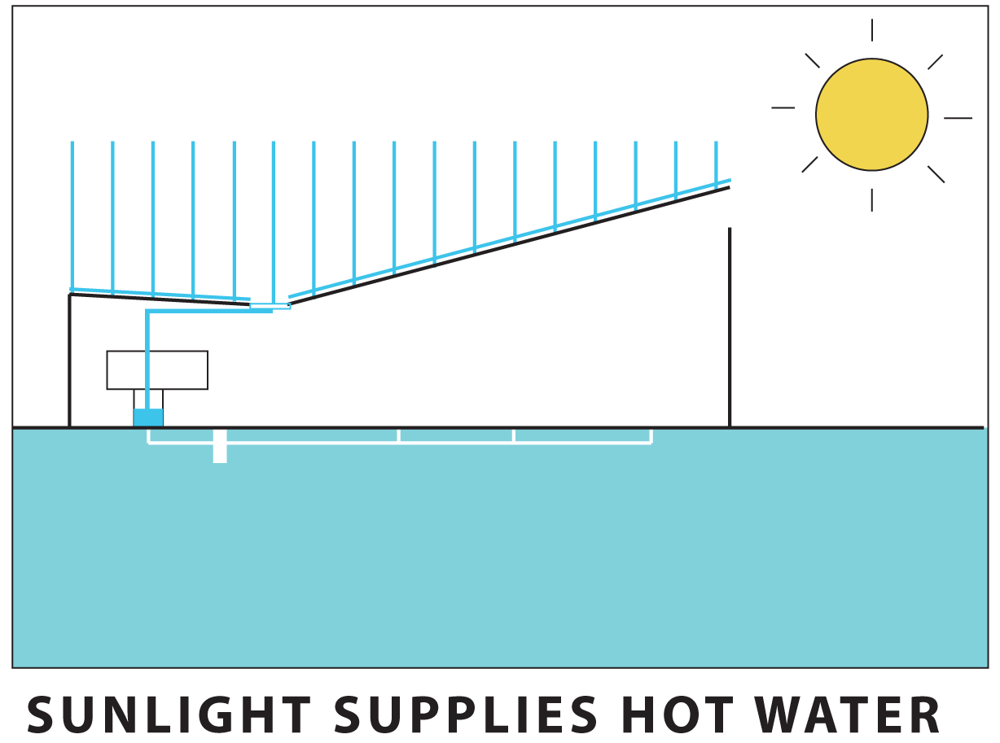
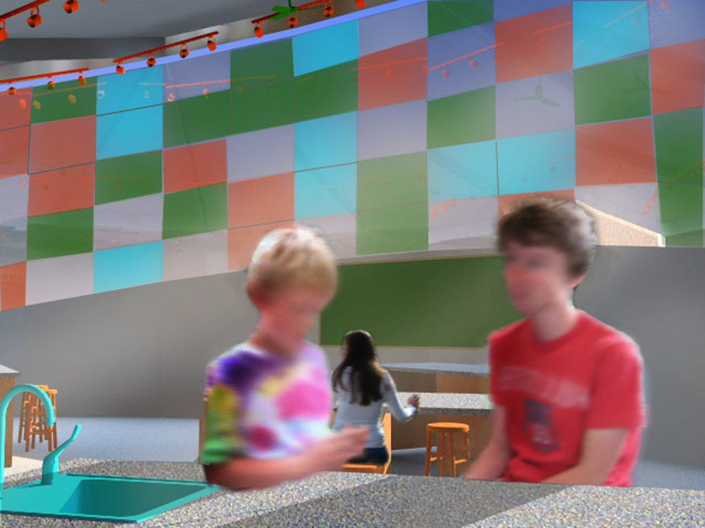
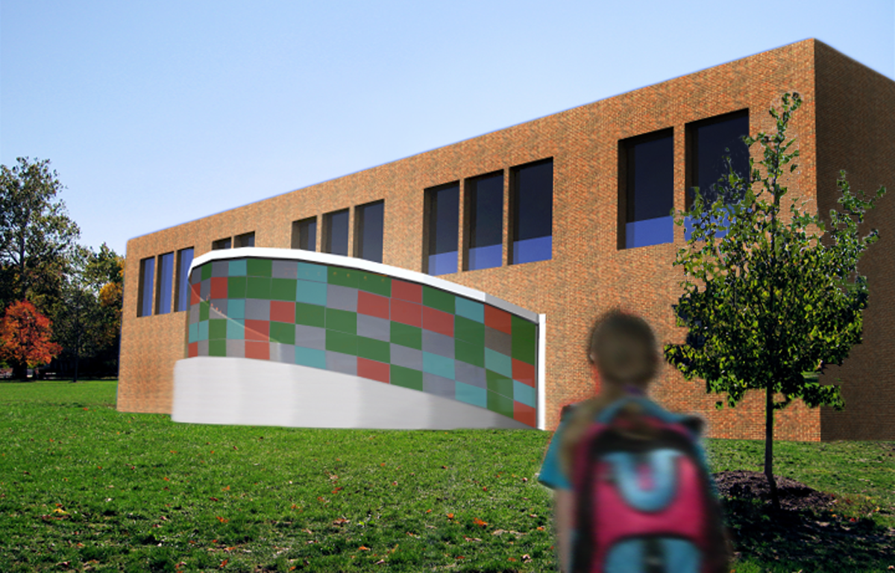

Light of Tomorrow
Miami University, 2009
SUSTAINABLE DESIGN

Project Overview: The ‘light of tomorrow’ is the use of sunlight as usable energy, and education is the tool to make this future a reality. This eco-classroom was designed to to fit as an addition to any primary school. It encourages the students to explore and interact directly with the sustainable processes made possible by sunlight. Making these processes tangible allows students to better understand and appreciate the importance of sunlight as the driving force in environmentally responsible construction and building operation.

